第1章
受与速度成正比的阻力作用的物体运动
命题1 定理1
如果一个物体受到的阻力与其速度成正比，则阻力使它损失的运动正比于它在运动中所掠过的距离。
因在每个相等的时间间隔里损失的运动都正比于速度，即，正比于掠过距离的微小增量，所以，通过加以复合知，整个时间中损失的运动正比于掠过的距离。
证毕。
推论．如果该物体不受任何引力作用，仅靠其惯性力推动在自由空间中运动，并且已知其开始运动时的全部运动，以及它掠过部分路程后剩余的运动，则也可以求出该物体能在无限时间中所掠过的总距离。因为该距离比现已掠过的距离等于开始时的总运动比该运动中已损失的部分。
引理1
正比于其差的几个量连续正比。
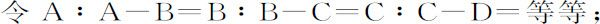
则由相减法，
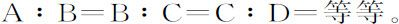
证毕。
命题2 定理2
如果一个物体受到正比于其速度的阻力，并只受其惯性力的推动而运动，通过均匀介质，把时间分为相等的间隔，则在每个时间间隔的开始时的速度形成几何级数，而其间掠过的距离正比于该速度。
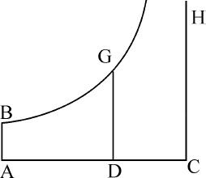
情形1．把时间分为相等间隔；如果设在每个间隔开始时阻力以正比于速度的一次冲击对物体作用，则每个间隔里速度的减少量都正比于同一个速度。所以这些速度正比于它们的差，因而（根据第二编引理1）连续正比。所以，如果越过相等的间隔数把任意相等的时间部分加以组合，则在这些时间开始时的速度正比于从一个连续级数中越过相等数目的中间项取出的项。但这些项的比值是由中间项相等比值重复组合得到的，因而是相等的。所以正比于这些项的速度，也构成几何级数，令相等的时间间隔趋于零，其数目趋于无限，使阻力的冲击复得连续；则在相等时间间隔开始时连续正比的速度这时也连续正比。
情形2．由相减法，速度的差，即每个时间间隔中所失去的速度部分正比于总速度；而每个时间间隔中掠过的距离正比于失去的速度部分（由第一编，命题1），因而也正比于总距离。
推论．如果关于直角渐近线AC，CH作双曲线BG，再作AB，DG垂直于渐近线AC，把运动开始时物体的速度和介质阻力用任意已知线段AC表示，而若干时间以后的用不定直线DC表示；则时间可以由面积ABGD表示，该时间中掠过的距离可以由线段AD表示。因为，如果该面积随着点D的运动而与时间一样均匀增加，则直线DC将按几何比率随速度一同减少；而在相同时间里所画出的直线AC部分，也将以相同比率减少。
命题3 问题1
求在均匀介质中沿直线上升或下落的物体的运动，其所受阻力正比于其速度，还有均匀重力作用于其上。
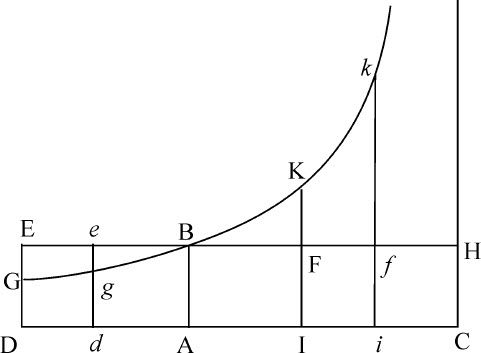
设物体上升，令任意给定矩形BACH表示重力；而直线AB另一侧的矩形BADE表示上升开始时的介质阻力。通过点B，关于直角渐近线AC，CH作一双曲线，与垂线DE，de 相交于G，g ；上升的物体在时间DGgd 内掠过距离EGge ；在时间DGBA内掠过整个上升距离EGB；在时间ABKI内掠过下落距离BFK；在时间IKki 内掠过下落距离KFfk ；而物体在此期间的速度（正比于介质阻力）分别为ABED，ABed ，o ，ABFI，ABfi ；物体下落所获得的最大速度为BACH。
因为，把矩形BACH分解为无数小矩形Ak ，Kl ，Lm ，Mn 等，它们将正比于在同样多相等时间间隔内产生的速度增量；则o ，Ak ，Al ，Am ，An 等正比于总速度，因而（由命题）正比于每个时间间隔开始时的介质阻力。取AC比AK，或ABHC比ABk K等于第二个时间间隔开始时的重力比阻力；则从重力中减去阻力，ABHC，Kk HC，Ll HC，Mm HC等等，将正比于在每个时间间隔开始时使物体受到作用的绝对力，因而（由定律I）正比于速度的增量，即，正比于矩形Ak ，Kl ，Lm ，Mn 等等，因而（由第一编引理1）组成几何级数。所以，如果延长直线Kk ，Ll ，Mm ，Nn 等等使之与双曲线相交于q ，r ，s ，t 等，则面积ABq K，Kqr L，Lrs M，Mst N等将相等，因而与相等的时间以及相等的重力相似。但面积ABq K（由第一编引理7推论Ⅲ和引理8）比面积Bkq 等于Kq 比
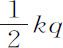
，或AC比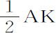
，即等于重力比第一个时间间隔中间时刻的阻力。由类似理由，面积q KLr ，r LMs ，s MNt 等等比面积qklr ，rlms ，smnt 等等，等于重力比第二，第三，第四等等时间间隔中间时刻的阻力。所以，由于相等于面积BAKg ，q KLr ，r LMs ，s MNt 等等相似于重力，面积Bkg ，qklr ，rlms ，smnt 等等也相似于每个时间间隔中间时刻的阻力，即（由命题），相似于速度，也相似于掠过的距离。取相似量以及面积Bkq ，Blr ，Bms ，Bnt 等等的和，它将相似于掠过的总距离；而面积ABq K，ABr L，ABs M，ABt N等等也与时间相似。所以，下落的物体在任意时间ABr L内掠过距离Blr ，在时间Lrt N内掠过距离rlnt 。完毕。
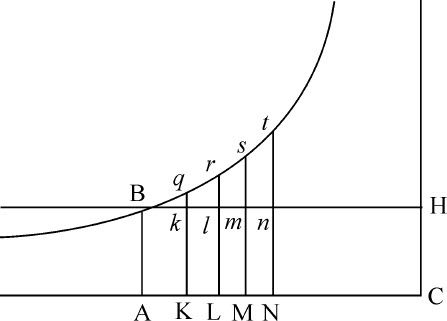
上升运动的证明与此相似。
推论Ⅰ．物体下落所能得到的最大速度比任意已知时间内得到的速度等于连续作用于它之上的已知重力比在该时间末阻碍它运动的阻力。
推论Ⅱ．时间作算术级数增加时，物体在上升中最大速度与速度的和，以及在下落中它们的差，都以几何级数减少。
推论Ⅲ．在相等的时间差中，掠过的距离的差也以相同几何级数减少。
推论Ⅳ．物体掠过的距离是两个距离的差，其一正比于开始下落后的时间，另一个则正比于速度；而这两个（距离）在开始下落时相等。
命题4 问题2
设均匀介质中的重力是均匀的，并垂直指向水平面：求其中受正比于速度的阻力作用的抛体的运动。
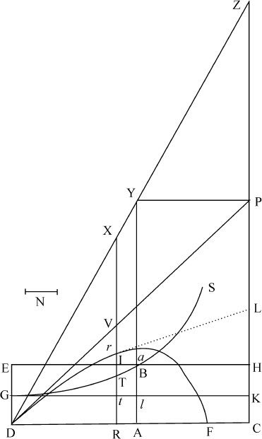
令抛体自任意处所D沿任意直线DP方向抛出，在运动开始时的速度以长度DP表示。自点P向水平线DC作垂线PC，与DC相交于A，使DA比AC等于开始向上运动时所受到的介质阻力的垂直分量，比重力；或（等价地）使得DA与DP的乘积比AC与CP的乘积等于开始运动时的全部阻力比重力。以DC，CP为渐近线作任意双曲线GTBS与垂线DG，AB相交于G和B；作平行四边形DGKC，其边GK与AB相交于Q。取一段长度N，使它与QB的比等于DC比CP；在直线DC上任意点R作其垂线RT，与双曲线相交于T，与直线EH，GK，DP相交于I，t 和V；在该垂线上取Vr 等于
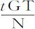
，或，等价地，取Rr 等于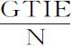
；抛体在时间DRTG内将到达点r ，画出曲线Dra F，即点r 的轨迹；因而将在垂线AB上的点a 达到其最大高度；以后即向渐近线PC趋近，它在任意点r 的速度正比于曲线的切线r L。完毕。
因为
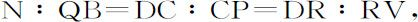
所以RV等于
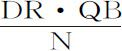
，而且Rr （即RV－V r ，或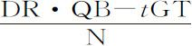
）等于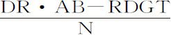
。现在令面积RDGT表示时间，且把物体的运动（由运动定律推论Ⅱ）分为两部分，一为向上的，另一为水平的。由于阻力正比于运动，把它也分解为与这二种运动成正比且方向相反的两部分：因而表示水平方向运动的长度（由第二编命题2）正比于线段DR，而高度（由第二编命题3）正比于面积DR·AB－RDGT，即正比于线段Rr 。但在运动刚开始时面积RDGT等于乘积DR·AQ，因而该线段Rr 或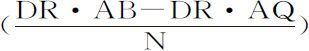
比DR等于AB－AQ或QB比N，即等于CP比DC；所以等于开始时向上的运动比水平的运动。由于Rr 总是正比于高度，DR总是正比于水平长度，而开始运动时Rr 比DR等于高度比长度，由此可以推出，Rr 比DR总是等于高度比长度；所以物体将沿点r 的轨迹曲线Dra F运动。证毕。
推论Ⅰ．Rr 等于
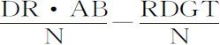
；所以，如果延长RT到X，使RX等于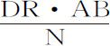
，即，如果作平行四边形ACPY，作DY与CP相交于Z，再延长RT与DY相交于X；则Xr 等于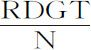
，因而正比于时间。推论Ⅱ．如果按几何级数选取无数个线段CR，或等价地，取无数个线段ZX，则有同样多个线段Xr 按算术级数与之对应。所以曲线Dra F很容易用对数表做出。
推论Ⅲ．如果以D为顶点作一抛物线，把直径DG向下延长，其通径比2DP等于运动开始时的全部阻力比重力，则物体由处所D沿直线DP方向在均匀阻力的介质中画出曲线Dra F的速度，与它由同一处所D沿同一直线DP方向在无阻力介质中画出一抛物线的速度相同。因为在运动刚开始时，该抛物线的通径为
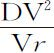
；而Vr 等于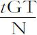
或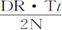
。如果作一条直线与双曲线GTS相切于G，则它平行于DK，因而Tt 等于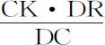
，而N等于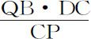
。所以Vr 等于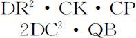
，即（由于DR与DC，DV与DP成正比），等于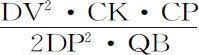
；通径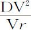
等于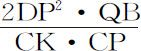
，即（因为QB与CK，DA与AC成正比），等于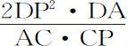
，所以通径比2DP等于DP·DA比CP·AC；即等于阻力比重力。证毕。
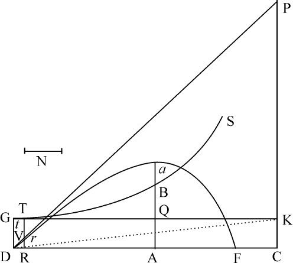
推论Ⅳ．如果从任意处所D以给定速度抛出一物体，抛出方向沿着位置已定的直线DP，且在运动开始时介质阻力为已知，则可以求出物体画出的曲线Dra F。因为速度已知，则容易求出抛物线的通径。再取2DP比该通径等于引力比阻力，即可求出DP。然后在DC上取A，使CP·AC比DP·DA等于重力比阻力，即求得点A，因此得到曲线Dra F。
推论Ⅴ．反之，如果已知曲线Dra F，则可以求出物体在每一个处所r 的速度和介质的阻力。因为CP·AC与DP·DA比值已知，则开始运动时的介质阻力，以及抛物线的通径可以求出。因而也可以求出开始运动时的速度，再由切线r L的长度即可求得与它成正比的任意处所r 的速度以及与该速度成正比的阻力。
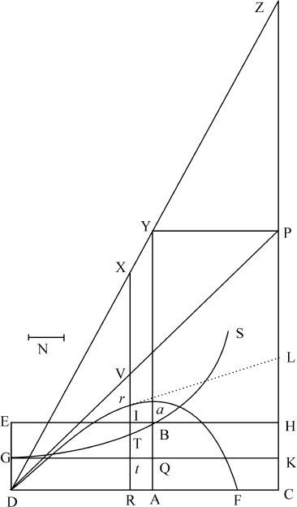
推论Ⅵ．由于长度2DP比抛物线的通径等于在D处的引力比阻力，由速度的增加可知阻力也以相同比率增加，而抛物线通径以该比率的平方增加，容易推知长度2DP仅以该简单比率增加；所以它总是正比于速度；角度CDP的变化对它的增减没有影响，除非速度也变化。
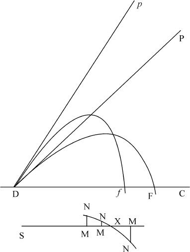
推论Ⅶ．由此得到一种与该现象很近似的求曲线Dra F的方法。因而可以求出被抛射物体受到的阻力和速度。由处所D沿不同角度CDP和CDp 以相同速度抛出两个相等的物体，测知它们落在地平面DC上的位置F，f 。然后在DP或Dp 上任取一段长度表示D处的阻力，它与重力的比为任意比值，令该比值以任意长度SM表示。然后，由该假设长度DP计算出长度DF，Df ；再由计算出的比值
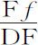
减去由实验测出的同一比值；令该差值以垂线MN表示。通过不断设定阻力与引力的新比值SM得到新的差MN，重复两到三次，在直线SM的一侧画出正差值，另一侧画出负差值；通过点N，N，N画出规则曲线NNN，与直线SMMM相交于X，则SX就是要求的阻力与重力的实际比值。由该比值可以计算出长度DF；而那个与假设长度DP的比等于实验测出的长度DF与刚计算出的长度DF的比的长度，就是DP的实际长度。求出这些以后，就既可以得到物体画出的曲线Dra F，又可以得到物体在任一处所的速度和阻力。附注
不过，物体的阻力正比于速度，与其说是物理实际，不如说是数学假设。在完全没有粘度的介质中，物体受到的阻力都正比于速度的平方。因为，运动速度较快的物体在较短时间内把占较大速度中较多比例的运动传递给等量的介质；而在相同时间里，由于受到扰动的介质数量较多，被传递的运动正比于该比比例的平方；而阻力（由运动定律Ⅱ和Ⅲ）正比于被传递的运动。所以，让我们看看这一阻力定律带来什么样的运动。